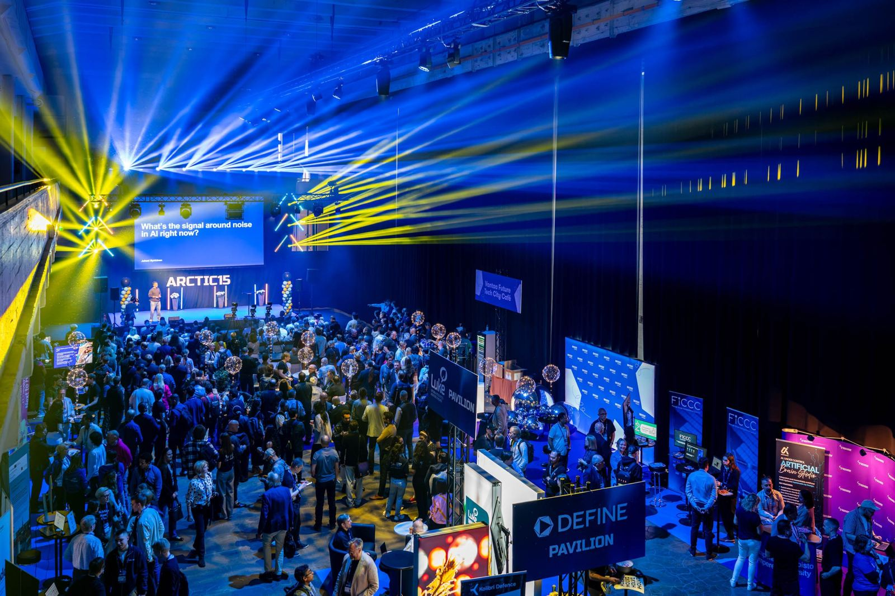

Conferences · Tech
ARCTIC15 Helsinki 2027
- Dates
- –
- Location
- Helsinki, Finland
- Format
- In-person
- Category
- Tech
- Industry
- Tech
- Organiser
- ArcticStartup
- Price
- Official ticket section, accessed 23 Nov 2026, lists a Day 2 ticket at €25 (incl. VAT note on the page) and full-event tickets at €449 and €999. Exact 2027 tier names should be re-checked on the ticket page at refresh.
- Official website
- https://arctic15.com/
About
Dates are local civil dates in Finland (Europe/Helsinki).
Topics: startups, investment, deep tech.
Official arctic15.com page fetched 24 Nov 2026 publishes 'Expected Numbers in ARCTIC15 2027' including '6500 + ATTENDEES'. The stated 6,500 figure is stored as expected attendance (the plus sign is a floor, not a higher official total). A 2027 venue building is still not named.
Sources
- Official — https://arctic15.com/